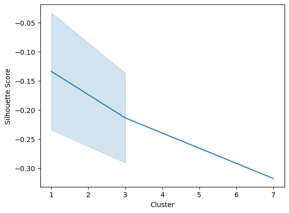
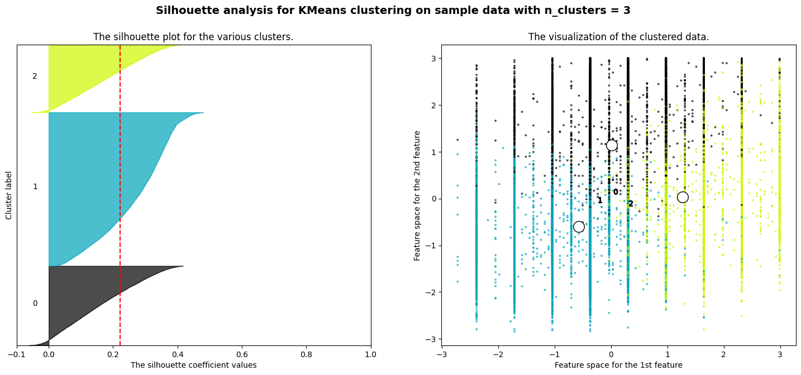

import pandas as pd
import numpy as np
import matplotlib.pyplot as plt
import seaborn as snsdata=pd.read_csv('../Data/01-modified-data/cardiovascular_numeric_final.csv')
data = data.drop(data.columns[0], axis=1)
data.head()| id | age | gender | height | weight | ap_hi | ap_lo | cholesterol | gluc | smoke | alco | active | cardio | bmi | |
|---|---|---|---|---|---|---|---|---|---|---|---|---|---|---|
| 0 | 0 | 50 | 2 | 168 | 62 | 110 | 80 | 1 | 1 | 0 | 0 | 1 | 0 | 21.97 |
| 1 | 1 | 55 | 1 | 156 | 85 | 140 | 90 | 3 | 1 | 0 | 0 | 1 | 1 | 34.93 |
| 2 | 2 | 52 | 1 | 165 | 64 | 130 | 70 | 3 | 1 | 0 | 0 | 0 | 1 | 23.51 |
| 3 | 3 | 48 | 2 | 169 | 82 | 150 | 100 | 1 | 1 | 0 | 0 | 1 | 1 | 28.71 |
| 4 | 4 | 48 | 1 | 156 | 56 | 100 | 60 | 1 | 1 | 0 | 0 | 0 | 0 | 23.01 |
numerical_cols = ["age", "height", "weight", "ap_hi", "ap_lo", "bmi"]
X = data[numerical_cols]
Y = data['cardio']
print(X) age height weight ap_hi ap_lo bmi
0 50 168 62 110 80 21.97
1 55 156 85 140 90 34.93
2 52 165 64 130 70 23.51
3 48 169 82 150 100 28.71
4 48 156 56 100 60 23.01
... ... ... ... ... ... ...
64801 54 172 70 130 90 23.66
64802 58 165 80 150 80 29.38
64803 53 168 76 120 80 26.93
64804 61 163 72 135 80 27.10
64805 56 170 72 120 80 24.91
[64806 rows x 6 columns]from sklearn.preprocessing import StandardScaler
# Normalize the entire dataset
scaler = StandardScaler()
X_normalized = scaler.fit_transform(X)# K-means
from sklearn.cluster import KMeans, AgglomerativeClustering, MeanShift, Birch, DBSCAN
from scipy.spatial.distance import cdistclusters_range = range(1, 11)
inertia = []
distortion = []
for k in clusters_range:
kmeans = KMeans(n_clusters=k, random_state=0).fit(X_normalized)
inertia.append(kmeans.inertia_)
distortion.append(sum(np.min(cdist(X_normalized, kmeans.cluster_centers_, 'euclidean'), axis=1)) / X_normalized.shape[0])
results_df = pd.DataFrame({'Clusters': clusters_range, 'Distoration': distortion, 'Inertia': inertia})
results_df/Users/xueningyang/Library/Python/3.9/lib/python/site-packages/sklearn/cluster/_kmeans.py:1416: FutureWarning: The default value of `n_init` will change from 10 to 'auto' in 1.4. Set the value of `n_init` explicitly to suppress the warning
super()._check_params_vs_input(X, default_n_init=10)
/Users/xueningyang/Library/Python/3.9/lib/python/site-packages/sklearn/cluster/_kmeans.py:1416: FutureWarning: The default value of `n_init` will change from 10 to 'auto' in 1.4. Set the value of `n_init` explicitly to suppress the warning
super()._check_params_vs_input(X, default_n_init=10)
/Users/xueningyang/Library/Python/3.9/lib/python/site-packages/sklearn/cluster/_kmeans.py:1416: FutureWarning: The default value of `n_init` will change from 10 to 'auto' in 1.4. Set the value of `n_init` explicitly to suppress the warning
super()._check_params_vs_input(X, default_n_init=10)
/Users/xueningyang/Library/Python/3.9/lib/python/site-packages/sklearn/cluster/_kmeans.py:1416: FutureWarning: The default value of `n_init` will change from 10 to 'auto' in 1.4. Set the value of `n_init` explicitly to suppress the warning
super()._check_params_vs_input(X, default_n_init=10)
/Users/xueningyang/Library/Python/3.9/lib/python/site-packages/sklearn/cluster/_kmeans.py:1416: FutureWarning: The default value of `n_init` will change from 10 to 'auto' in 1.4. Set the value of `n_init` explicitly to suppress the warning
super()._check_params_vs_input(X, default_n_init=10)
/Users/xueningyang/Library/Python/3.9/lib/python/site-packages/sklearn/cluster/_kmeans.py:1416: FutureWarning: The default value of `n_init` will change from 10 to 'auto' in 1.4. Set the value of `n_init` explicitly to suppress the warning
super()._check_params_vs_input(X, default_n_init=10)
/Users/xueningyang/Library/Python/3.9/lib/python/site-packages/sklearn/cluster/_kmeans.py:1416: FutureWarning: The default value of `n_init` will change from 10 to 'auto' in 1.4. Set the value of `n_init` explicitly to suppress the warning
super()._check_params_vs_input(X, default_n_init=10)
/Users/xueningyang/Library/Python/3.9/lib/python/site-packages/sklearn/cluster/_kmeans.py:1416: FutureWarning: The default value of `n_init` will change from 10 to 'auto' in 1.4. Set the value of `n_init` explicitly to suppress the warning
super()._check_params_vs_input(X, default_n_init=10)
/Users/xueningyang/Library/Python/3.9/lib/python/site-packages/sklearn/cluster/_kmeans.py:1416: FutureWarning: The default value of `n_init` will change from 10 to 'auto' in 1.4. Set the value of `n_init` explicitly to suppress the warning
super()._check_params_vs_input(X, default_n_init=10)
/Users/xueningyang/Library/Python/3.9/lib/python/site-packages/sklearn/cluster/_kmeans.py:1416: FutureWarning: The default value of `n_init` will change from 10 to 'auto' in 1.4. Set the value of `n_init` explicitly to suppress the warning
super()._check_params_vs_input(X, default_n_init=10)| Clusters | Distoration | Inertia | |
|---|---|---|---|
| 0 | 1 | 2.292838 | 388836.000000 |
| 1 | 2 | 1.993028 | 291296.924742 |
| 2 | 3 | 1.857978 | 252154.144591 |
| 3 | 4 | 1.748951 | 223794.658809 |
| 4 | 5 | 1.654102 | 202055.604497 |
| 5 | 6 | 1.591076 | 186197.578470 |
| 6 | 7 | 1.530241 | 173906.898109 |
| 7 | 8 | 1.483570 | 163483.569781 |
| 8 | 9 | 1.450806 | 156119.165658 |
| 9 | 10 | 1.419384 | 149598.773806 |
fig, ax = plt.subplots(1, 2, figsize=(15, 5))
# Distortion plot
ax[1].plot(clusters_range, distortion, 'bo-')
ax[1].set_title('Elbow Method For Optimal Cluster (Distortion)')
ax[1].set_xlabel('Number of Clusters')
ax[1].set_ylabel('Distortion')
ax[1].grid(True)
# Inertia plot
ax[0].plot(clusters_range, inertia, 'bo-')
ax[0].set_title('Elbow Method For Optimal Cluster (Inertia)')
ax[0].set_xlabel('Number of Clusters')
ax[0].set_ylabel('Inertia')
ax[0].grid(True)
plt.tight_layout()
plt.show()
# DBSCAN
from sklearn.cluster import DBSCAN
from sklearn.metrics import silhouette_scoreeps_range = (0.1, 0.2,0.3,0.4,0.5)
min_samples_range = (100,1000,5000)
best_eps = 0
best_min_samples = 0
best_silhouette = -1
all_scores = []
for eps in eps_range:
for min_samples in min_samples_range:
dbscan = DBSCAN(eps=eps, min_samples=min_samples).fit(X_normalized)
labels = dbscan.labels_
# Ignore noise samples (-1 label)
if len(set(labels)) > 1 and -1 in labels:
curr_silhouette = silhouette_score(X_normalized, labels)
cluster_nums = len(set(labels)) - (1 if -1 in labels else 0)
all_scores.append((eps, min_samples, curr_silhouette,cluster_nums))
if curr_silhouette > best_silhouette:
best_eps, best_min_samples, best_silhouette, cluster_num = eps, min_samples, curr_silhouette, cluster_nums
results_df = pd.DataFrame(all_scores, columns=['eps', 'min_samples', 'silhouette_score','cluster'])
sns.lineplot(x=results_df['cluster'], y=results_df['silhouette_score'])
plt.xlabel('Cluster')
plt.ylabel('Silhouette Score')
plt.show()
print(f"Number of clusters= {cluster_num} with best silhouette score of {best_silhouette:.3f}")
Number of clusters= 1 with best silhouette score of -0.033results_df #3-optimal | eps | min_samples | silhouette_score | cluster | |
|---|---|---|---|---|
| 0 | 0.2 | 100 | -0.317742 | 7 |
| 1 | 0.3 | 100 | -0.290760 | 3 |
| 2 | 0.4 | 100 | -0.033415 | 1 |
| 3 | 0.5 | 100 | -0.137065 | 3 |
| 4 | 0.5 | 1000 | -0.234400 | 1 |
X_sample = X.sample(n=6000, replace=True)
# Normalize the entire dataset
scaler = StandardScaler()
X_sample_norm = scaler.fit_transform(X_sample)silhouette_values= []
n_clusters =[]
linkage=[]
for i in range(2,11):
hierarchical_model = AgglomerativeClustering(n_clusters=i, linkage='ward')
cluster_labels = hierarchical_model.fit_predict(X_sample_norm)
score = silhouette_score(X_sample_norm, cluster_labels)
silhouette_values.append(score)
n_clusters.append(i)
linkage.append('Euclidean')
hierarchical_model = AgglomerativeClustering(n_clusters=i, linkage='single')
cluster_labels = hierarchical_model.fit_predict(X_sample_norm)
score = silhouette_score(X_sample_norm, cluster_labels)
silhouette_values.append(score)
n_clusters.append(i)
linkage.append('Manhattan')
hierarchical_model = AgglomerativeClustering(n_clusters=i, linkage='average')
cluster_labels = hierarchical_model.fit_predict(X_sample_norm)
score = silhouette_score(X_sample_norm, cluster_labels)
silhouette_values.append(score)
n_clusters.append(i)
linkage.append('Cosine')
hierarchical_model = AgglomerativeClustering(n_clusters=i, linkage='complete')
cluster_labels = hierarchical_model.fit_predict(X_sample_norm)
score = silhouette_score(X_sample_norm, cluster_labels)
silhouette_values.append(score)
n_clusters.append(i)
linkage.append('Correlation')sns.lineplot(x=n_clusters,y=silhouette_values, hue =linkage)
plt.xlabel("Cluster")
plt.ylabel("Silhouette Score")
plt.title('Hierarchical Clustering')Text(0.5, 1.0, 'Hierarchical Clustering')
import scipy.cluster.hierarchy as sch
# Plotting a dendrogram
dendrogram = sch.dendrogram(sch.linkage(X_sample_norm, method='ward'))
plt.axhline(y=85, color='r', linestyle='--')
plt.title('Dendrogram')
plt.xlabel('Data')
plt.ylabel('Euclidean distances')
plt.show()

#Final Model
#K-means cluster = 3
kmeans = KMeans(n_clusters=3, random_state=0).fit(X_normalized)
kmeans_labels = kmeans.labels_
kmeans_s = silhouette_score(X_normalized, kmeans_labels)
#DBSCAN cluster = 3
dbscan = DBSCAN(eps=0.5, min_samples=100).fit(X_normalized)
dbscan_labels = dbscan.labels_
DBSCAN_s = silhouette_score(X_normalized, dbscan_labels)
#Hierarchical cluster = 2
labels = AgglomerativeClustering(n_clusters=2, linkage='single').fit_predict(X_sample_norm)
Hierarchical_s = silhouette_score(X_sample_norm, labels)/Users/xueningyang/Library/Python/3.9/lib/python/site-packages/sklearn/cluster/_kmeans.py:1416: FutureWarning: The default value of `n_init` will change from 10 to 'auto' in 1.4. Set the value of `n_init` explicitly to suppress the warning
super()._check_params_vs_input(X, default_n_init=10)print(f"K-means Silhouette Score= {kmeans_s:.4f}")
print(f"DBSCAN Silhouette Score= {DBSCAN_s:.4f}")
print(f"Hierarchical Silhouette Score= {Hierarchical_s:.4f}")K-means Silhouette Score= 0.2223
DBSCAN Silhouette Score= -0.1371
Hierarchical Silhouette Score= 0.3090def plot_cluster(X,color_vector,method):
fig, ax = plt.subplots()
ax.scatter(X[:,3], X[:,5],c=color_vector, alpha=0.5) #, c=y
ax.set(xlabel='ap_hi', ylabel='bmi',
title=method)
ax.grid()
# fig.savefig("test.png")
plt.show()plot_cluster(X_normalized,kmeans_labels,'K-means')
plot_cluster(X_normalized,dbscan_labels,'DBSCAN')
#In the DBSCAN (Density-Based Spatial Clustering of Applications with Noise) clustering model, a label of -1 signifies a noise point. Specifically, it indicates that a data point does not belong to any cluster due to insufficient neighboring points to meet the minimum density requirement (defined by min_samples and eps parameters). Essentially, these are points that are considered outliers within the dataset.
plot_cluster(X_sample_norm,labels,'Hierarchical')
K-means ~ optimal model
# SOURCE: https://scikit-learn.org/stable/auto_examples/cluster/plot_kmeans_silhouette_analysis.html
from sklearn.datasets import make_blobs
from sklearn.cluster import KMeans
from sklearn.metrics import silhouette_samples, silhouette_score
import matplotlib.pyplot as plt
import matplotlib.cm as cm
import numpy as np
# Generating the sample data from make_blobs
# This particular setting has one distinct cluster and 3 clusters placed close
# together.
X = X_normalized
range_n_clusters = [2, 3]
for n_clusters in range_n_clusters:
# Create a subplot with 1 row and 2 columns
fig, (ax1, ax2) = plt.subplots(1, 2)
fig.set_size_inches(18, 7)
# The 1st subplot is the silhouette plot
# The silhouette coefficient can range from -1, 1 but in this example all
# lie within [-0.1, 1]
ax1.set_xlim([-0.1, 1])
# The (n_clusters+1)*10 is for inserting blank space between silhouette
# plots of individual clusters, to demarcate them clearly.
ax1.set_ylim([0, len(X) + (n_clusters + 1) * 10])
# Initialize the clusterer with n_clusters value and a random generator
# seed of 10 for reproducibility.
clusterer = KMeans(n_clusters=n_clusters, random_state=10)
cluster_labels = clusterer.fit_predict(X)
# The silhouette_score gives the average value for all the samples.
# This gives a perspective into the density and separation of the formed
# clusters
silhouette_avg = silhouette_score(X, cluster_labels)
print(
"For n_clusters =",
n_clusters,
"The average silhouette_score is :",
silhouette_avg,
)
# Compute the silhouette scores for each sample
sample_silhouette_values = silhouette_samples(X, cluster_labels)
y_lower = 10
for i in range(n_clusters):
# Aggregate the silhouette scores for samples belonging to
# cluster i, and sort them
ith_cluster_silhouette_values = sample_silhouette_values[cluster_labels == i]
ith_cluster_silhouette_values.sort()
size_cluster_i = ith_cluster_silhouette_values.shape[0]
y_upper = y_lower + size_cluster_i
color = cm.nipy_spectral(float(i) / n_clusters)
ax1.fill_betweenx(
np.arange(y_lower, y_upper),
0,
ith_cluster_silhouette_values,
facecolor=color,
edgecolor=color,
alpha=0.7,
)
# Label the silhouette plots with their cluster numbers at the middle
ax1.text(-0.05, y_lower + 0.5 * size_cluster_i, str(i))
# Compute the new y_lower for next plot
y_lower = y_upper + 10 # 10 for the 0 samples
ax1.set_title("The silhouette plot for the various clusters.")
ax1.set_xlabel("The silhouette coefficient values")
ax1.set_ylabel("Cluster label")
# The vertical line for average silhouette score of all the values
ax1.axvline(x=silhouette_avg, color="red", linestyle="--")
ax1.set_yticks([]) # Clear the yaxis labels / ticks
ax1.set_xticks([-0.1, 0, 0.2, 0.4, 0.6, 0.8, 1])
# 2nd Plot showing the actual clusters formed
colors = cm.nipy_spectral(cluster_labels.astype(float) / n_clusters)
ax2.scatter(
X[:, 3], X[:, 5], marker=".", s=30, lw=0, alpha=0.7, c=colors, edgecolor="k"
)
# Labeling the clusters
centers = clusterer.cluster_centers_
# Draw white circles at cluster centers
ax2.scatter(
centers[:, 3],
centers[:, 5],
marker="o",
c="white",
alpha=1,
s=200,
edgecolor="k",
)
for i, c in enumerate(centers):
ax2.scatter(c[0], c[1], marker="$%d$" % i, alpha=1, s=50, edgecolor="k")
ax2.set_title("The visualization of the clustered data.")
ax2.set_xlabel("Feature space for the 1st feature")
ax2.set_ylabel("Feature space for the 2nd feature")
plt.suptitle(
"Silhouette analysis for KMeans clustering on sample data with n_clusters = %d"
% n_clusters,
fontsize=14,
fontweight="bold",
)
plt.show()/Users/xueningyang/Library/Python/3.9/lib/python/site-packages/sklearn/cluster/_kmeans.py:1416: FutureWarning: The default value of `n_init` will change from 10 to 'auto' in 1.4. Set the value of `n_init` explicitly to suppress the warning
super()._check_params_vs_input(X, default_n_init=10)
/Users/xueningyang/Library/Python/3.9/lib/python/site-packages/sklearn/cluster/_kmeans.py:1416: FutureWarning: The default value of `n_init` will change from 10 to 'auto' in 1.4. Set the value of `n_init` explicitly to suppress the warning
super()._check_params_vs_input(X, default_n_init=10)For n_clusters = 2 The average silhouette_score is : 0.2362214005967959
For n_clusters = 3 The average silhouette_score is : 0.22231647505616087